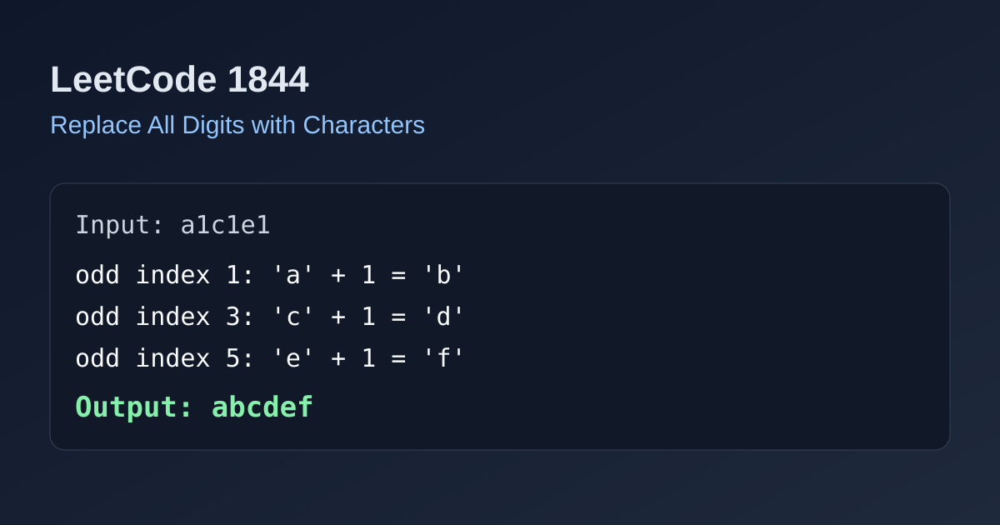

LeetCode 1844: Replace All Digits with Characters (Shift by Previous Letter)
LeetCode 1844StringSimulationToday we solve LeetCode 1844 - Replace All Digits with Characters.
Source: https://leetcode.com/problems/replace-all-digits-with-characters/

English
Problem Summary
Given a string where even indices are lowercase letters and odd indices are digits, replace each digit d with the character obtained by shifting the previous letter forward by d.
Key Insight
Each odd index depends only on its immediate left neighbor. So we can do one left-to-right pass and rewrite odd positions directly.
Algorithm
- Convert string to mutable char array.
- For each odd index i, set s[i] = s[i-1] + (s[i]-'0').
- Return the rebuilt string.
Complexity Analysis
Time: O(n)
Space: O(n) (or O(1) extra if mutable in place).
Reference Implementations (Java / Go / C++ / Python / JavaScript)
class Solution {
public String replaceDigits(String s) {
char[] a = s.toCharArray();
for (int i = 1; i < a.length; i += 2) {
a[i] = (char) (a[i - 1] + (a[i] - '0'));
}
return new String(a);
}
}func replaceDigits(s string) string {
b := []byte(s)
for i := 1; i < len(b); i += 2 {
b[i] = b[i-1] + (b[i] - '0')
}
return string(b)
}class Solution {
public:
string replaceDigits(string s) {
for (int i = 1; i < (int)s.size(); i += 2) {
s[i] = char(s[i - 1] + (s[i] - '0'));
}
return s;
}
};class Solution:
def replaceDigits(self, s: str) -> str:
a = list(s)
for i in range(1, len(a), 2):
a[i] = chr(ord(a[i - 1]) + ord(a[i]) - ord('0'))
return ''.join(a)var replaceDigits = function(s) {
const a = s.split('');
for (let i = 1; i < a.length; i += 2) {
a[i] = String.fromCharCode(a[i - 1].charCodeAt(0) + (a[i].charCodeAt(0) - 48));
}
return a.join('');
};中文
题目概述
给定字符串，偶数下标是小写字母，奇数下标是数字。把每个数字 d 替换成“前一个字母向后偏移 d 位”得到的新字符。
核心思路
每个奇数位只依赖左边一位字母，所以按顺序遍历奇数位并原地替换即可。
算法步骤
- 转成可修改字符数组。
- 遍历奇数下标 i，令 a[i] = a[i-1] + (a[i]-'0')。
- 最后转回字符串返回。
复杂度分析
时间复杂度：O(n)
空间复杂度：O(n)（若原地可变则额外空间为 O(1)）。
多语言参考实现（Java / Go / C++ / Python / JavaScript）
class Solution {
public String replaceDigits(String s) {
char[] a = s.toCharArray();
for (int i = 1; i < a.length; i += 2) {
a[i] = (char) (a[i - 1] + (a[i] - '0'));
}
return new String(a);
}
}func replaceDigits(s string) string {
b := []byte(s)
for i := 1; i < len(b); i += 2 {
b[i] = b[i-1] + (b[i] - '0')
}
return string(b)
}class Solution {
public:
string replaceDigits(string s) {
for (int i = 1; i < (int)s.size(); i += 2) {
s[i] = char(s[i - 1] + (s[i] - '0'));
}
return s;
}
};class Solution:
def replaceDigits(self, s: str) -> str:
a = list(s)
for i in range(1, len(a), 2):
a[i] = chr(ord(a[i - 1]) + ord(a[i]) - ord('0'))
return ''.join(a)var replaceDigits = function(s) {
const a = s.split('');
for (let i = 1; i < a.length; i += 2) {
a[i] = String.fromCharCode(a[i - 1].charCodeAt(0) + (a[i].charCodeAt(0) - 48));
}
return a.join('');
};
Comments